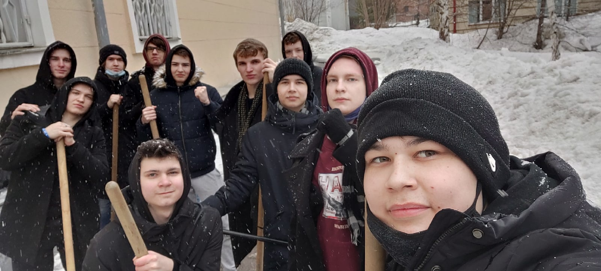
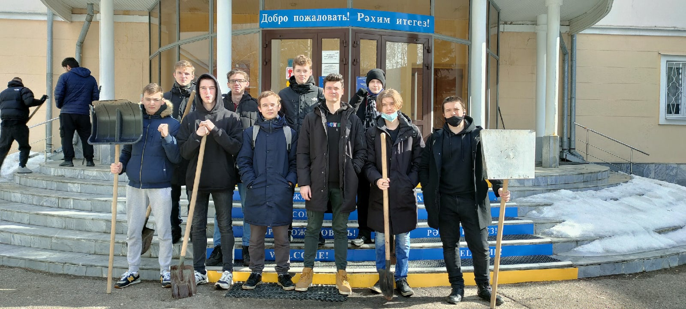

Пару слов О гуманитарной практике
Это была первая практика в моей жизни и она принесла мне много незабываемых эмоций.
Нейронная сеть представляет собой последовательность связанных нейронов.
Нейроны — единицы, получающие и передающие информацию. Сами по себе они не играют важной роли: нейроны имеют значение только в выстроенной из них цепи.
К нейрону поступают входящие сигналы, каждому из которых присвоен определенный вес. Сигнал умножается на свой вес, значения суммируются, и получается единое число, которое получает активационная функция.
День 1 Трудовой день
-
Начало практики
Этот день открыл для меня практику и я хорошо понимал, перед тем как хорошо отдохнуть, нужно хорошенько поработать. Как только мы пришли в вуз, нас поделили на две группы. Одна группа убирала снег, другая таскала парты. -
Уборка снега
Меня определили в группу по уборке снега, нам сразу дали лопаты и показали что где нужно было убрать. Уборка снега была не самой тяжелой задачей, которую я ожидал встретить в трудовой день, поэтому мы быстро со всем управились. -
Хорошо поработали
Мы с моей группой хорошо поработали и я был доволен этим днём, так как совместная работа нас ещё больше сблизила. Я рад что мы провели этот день с пользой для всех и на благо нашего вуза!
День 2 День религизоного просвящения
-
Неудачный день
В этот день мы посетили католический храм и синагогу. К сожалению, в этот день я не смог посетить эти места из-за плохого самочувствия в дороге и поэтому мне приходиться описывать всё исключительно на эмоциях, полученных моими одногруппниками. -
Католический храм
В Католическом храме наблюдалась очень приятная и спокойная атмосфера. Всё это очень напоминало простые православные храмы, лишь с некоторыми отличиями. Например, в более сдержанном оформлении храма. В целом, всем в этом храме понравилось. -
Синагога
Синагога же уже с самого начала казалась чем-то необычным. Первым интересным фактом стало то, что мужчины должны носить головные уборы в храме. Атмосфера в храме казалась более напряженной, но при этом не менее будоражущей.
День 3 Галерея Хазине
-
Давняя мечта
Этот день мне запомнился больше всего. Я давно мечтал побывать в галерее и благодаря нашей практике, моя мечта осуществилась. Я увидел множество интересных картин, у каждой была своя занимательная история. -
Начало выставки
Сначала мы ходили и познавали картины самостоятельно, там было множество интересных картин, описывающих быт жителей Татартсана разных годов. Было очень интересно ходить и смотреть на все эти произведения исскуства! -
Творчество Хариса Якупова
позже к нам присоединился экскурсовод и устроил нам очень увлекательную мини экскурсию по творчеству Хариса Якупова. Слушать историю его картин было очень интересно и главное познавательно в рамках истории.
День 4 День иностранного музея
-
Виртуальные выстовки
В этот день мы виртуально посещали иностранные музеи. Мне очень было интересно посмотреть на Амстердамский музей Винсента Ван Гога, поэтому первым делом я решил посетил именно его. На входе меня встретил легендарный автопортрет Ван Гога. -
Разнообразие картин
Помимо этого в музее было много интересных картин других талантливых художников, например такие картины как Сенокос замечательного художника Леона-Огюстена Лермитта. Помимо этого в музее былы выставленны разные статуи интерсных и известных личностей. -
Занимательная экскурсия.
Мне очень понравилось ходить по этому музею и я проходил по нему не менее часа рассматривая картины и углубляясь в их историю и историю их написания, хоть и виртуально. Когда-нибудь я обязательно посещу этот музей в реальной жизни!
День 5 День группы
-
Театральный день
Так совпало, что в день группы у нас было назначено представление в театре Качалова. Поэтому cначала мы погуляли на Баумана и чуть позже направились на назначенное нам представление - "Бал Воров"! -
Театр Качалова
Помимо этого в музее было много интересных картин других талантливых художников, например такие картины как Сенокос замечательного художника Леона-Огюстена Лермитта. Помимо этого в музее былы выставленны разные статуи интерсных и известных личностей. -
Занимательная экскурсия.
Мне очень понравилось ходить по этому музею и я проходил по нему не менее часа рассматривая картины и углубляясь в их историю и историю их написания, хоть и виртуально. Когда-нибудь я обязательно посещу этот музей в реальной жизни!